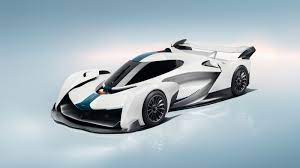
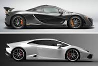
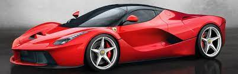

A supercar – also called exotic car – is a loosely defined description of street-legal, high-performance sports cars. Since the 2010s, the term hypercar has come into use for the highest performing supercars.
Clickhere for Wikipedia
<>Some people consider the 1993 McLaren F1 to be the first hypercar, while others believe the 2005 Bugatti Veyron was the first hypercar. With a recent shift towards electrification, many recent hypercars use a hybrid drivetrain, a trend started in 2013 by the McLaren P1,Porsche 918 Spyder , and LaFerrari , then continued in 2016 with the Koenigsegg Regera, in 2017 with the Mercedes-AMG One, and in 2019 with the Ferrari SF90 Stradale and McLaren Speedtail. Modern hypercars such as Pininfarina Battista, NIO EP9, Rimac Nevera, and Lotus Evija have also gone full-electric. Hypercars will also be able to be used as a base for Le Mans Prototype cars when rule changes come into effect from 2021.
The Lamborghini Miura, produced from 1966–1973, is often said to be the first supercar. By the 1970s and 1980s the term was in regular use, if not precisely defined. One interpretation up until the 1990s was to use it for mid-engine two-seat cars with at least eight cylinders (but typically a V12 engine), a power output of at least 400 bhp (298 kW) and a top speed of at least 180 mph (290 km/h). Other interpretations state that "it must be very fast, with sporting handling to match", "it should be sleek and eye-catching" and its price should be "one in a rarefied atmosphere of its own" or regard exclusivity (i.e. limited production volumes) as an important characteristic (such as those made by Ferrari or Lamborghini). It is also claimed that the definition of a supercar has always been subjective and a matter of blind prejudice.
During the 1960s, cars that are now considered to be muscle cars were then referred to as supercars.: The term was sometimes spelled with a capital S. In 1966 the sixties supercar became an official industry trend.[9]:For example, the May 1965 issue of the American magazine Car Life includes multiple references to supercars and "the supercar club" and a 1968 issue of Car & Driver magazine refers to "the Supercar street racer gang" market segment. In the model name of the AMC S/C Rambler, the "S/C" is an abbreviation for "SuperCar". Since the decline of the muscle car in the 1970s, the word supercar came to mean a car that has high performance[9]:interpretations of the term are for limited-production models produced by small manufacturers for enthusiasts, and, less so, standard-looking cars modified for increased performance.

  
Privacypolicy About Wikipedia DisclaimersContact WikipediaMobile Cookie statement